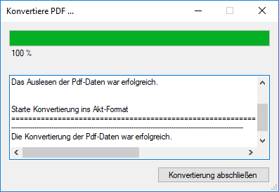
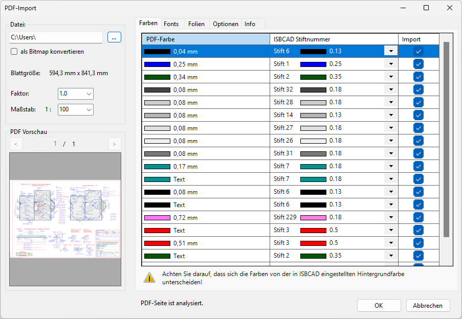
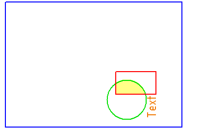

Importieren einer PDF-Datei. Öffnet den Dialog PDF-Import.
·Die PDF-Datei wird in einer neuen Zeichnung geöffnet.
·PDF-Dateien werden in das ISBCAD AKT-Format konvertiert. Somit können Sie Zeichnungen importieren, die nicht im DXF/DWG-Format verfügbar sind. So lassen sich beispielsweise Einbauskizzen von Maschinen oder ähnlichen Komponenten aus Katalogen übernehmen. Voraussetzung ist, dass die PDF-Datei vektorbasierte Zeichnungen enthält. Aus einem Foto (z. B. PNG, JPG) kann keine Linie übernommen werden, da ein Foto aus Pixeln besteht.
·Wenn in der PDF-Datei Pixelgrafiken enthalten sind, können Sie auf der Registerkarte Optionen ein Ablageverzeichnis angeben, in dem die Grafiken gespeichert werden sollen. In der Zeichnung selbst werden nur die Dateipfade zu den Grafiken gespeichert. Wenn Sie Grafikdateien oder das Ablageverzeichnis umbenennen, verschieben oder löschen, können die Grafiken in der Zeichnung nicht mehr angezeigt werden. Über [Datei | Grafik | Liste] können Sie fehlende Verknüpfungen prüfen und Dateipfade korrigieren. Auf der Registerkarte Optionen können Sie Grafiken auch vom Import ausschließen.
·Die Ergebnisse sehen nach dem Import möglicherweise gleich aus, aber der Inhalt der Dateien kann unterschiedlich sein. Zum Beispiel werden gestrichelte Linien in einzelne Linien aufgelöst oder Maßketten in einzelne Linien und Texte.
·Berücksichtigung unterschiedlicher Maßstäbe:
PDF-Dateien können beim Import nur in einen Maßstab umgewandelt werden. Die Zeichenelemente behalten aber ihre ursprüngliche Größe, so dass es zu Fehlinterpretationen kommen kann. Verwenden Sie nach dem Import gegebenenfalls die Maßstabskorrektur, um bestimmten Elementen einen anderen Maßstab zuzuweisen.
» Maßstabskorrektur
·Sie können eine PDF-Datei auch als Dokument in die aktuelle Zeichnung einfügen. Nutzen Sie dafür die Funktion [Option | Dokum].
Datei für die Konvertierung anpassen und importieren
§Klicken Sie auf  und wählen Sie die PDF-Datei aus.
und wählen Sie die PDF-Datei aus.
§Passen Sie ggf. die Einstellungen an.
Siehe Dialogbeschreibung weiter unten.
§Bestätigen Sie mit OK.
Die Meldung Konvertiere PDF... wird geöffnet und die Konvertierung beginnt. Die Konvertierung ist abgeschlossen, wenn der Ladebalken 100% anzeigt.
 |
§Klicken Sie auf Konvertierung abschließen.
Die Datei wird in einer neuen Zeichnung eingefügt.
Optionen im Dialog "PDF-Import"
 |
Datei
Auswahl der zu importierenden PDF-Datei.
Öffnet die Dateiauswahl.
Wenn Sie diese Option aktivieren, wird die PDF-Datei in eine Grafik im PNG-Format (Bitmap) umgewandelt und in einer neuen, leeren Zeichnung platziert.
Wichtig: Bei der Konvertierung wird im Speicherpfad der PDF-Datei ein neuer Ordner mit dem Namen der PDF-Datei angelegt. In diesem Ordner befindet sich die Pixelgrafik, die in der Zeichnung referenziert wird. In der Zeichnung selbst wird somit nur der Dateipfad zur Grafik gespeichert. Wenn Sie den Dateipfad ändern, z. B. den Ordner oder die Grafik umbenennen, verschieben oder löschen, kann sie in der Zeichnung nicht mehr angezeigt werden. Über [Datei | Grafik | Liste] können Sie fehlende Verknüpfungen prüfen und Dateipfade korrigieren (siehe Grafikliste).
Wenn Sie Grafiken und andere Dokumente einbetten und vollständig in der Zeichnung speichern möchten, verwenden Sie die Funktion Dokumenteinbettung.
Blattgröße
Blattgröße in der Ausgangsdatei.
Faktor
Damit die Geometrie mit den richtigen Maßen erscheint, müssen Sie den richtigen Faktor eingeben. Klicken Sie zunächst auf OK, um die Umformung zu starten und anschließend in der unteren Menüleiste auf  (s. DWG/DXF Dateien exportieren).
(s. DWG/DXF Dateien exportieren).
Maßstab:
Hier können Sie einen geeigneten Maßstab wählen.
PDF-Vorschau
Voransicht der PDF-Datei. Über der Voransicht wird angezeigt, aus wie vielen Seiten die PDF-Datei besteht (z. B. [1 / 4]). Wählen Sie mit den Pfeiltasten die Seite, die importiert werden soll, oder geben Sie die Seitenzahl per Tastatur ein. Bestätigen Sie mit der Eingabetaste.
OK
Konvertiert die PDF-Datei und öffnet sie in ISBCAD. Um zu überprüfen, ob der richtige Faktor gewählt wurde, nutzen Sie die Funktion [Messen] in der unteren Menüleiste. Sie können mit dem Folienmanager störende Folien ausblenden und über [?] die Elementeigenschaften abfragen.
Abbrechen
Die gesamte Aktion wird abgebrochen. Klicken Sie im Funktionsbereich auf [Einstellungen], um den PDF-Import Dialog wieder zu öffnen. Wenn Sie im Funktionsbereich eine andere Funktion anklicken, ist die Konvertierung der PDF-Datei abgeschlossen.
Farben
Zuweisen der ISBCAD Stiftnummern für die im PDF erkannten Farben.
·Achten Sie bei der Auswahl der Stifte darauf, dass sich die Farben von der ISBCAD Hintergrundfarbe deutlich unterscheiden.
» Systemdaten – Farbeinstellung; [Option | SysDat → Farbeinstellungen]
·Wenn Sie für mehrere PDF-Farben dieselbe ISBCAD Stiftnummer verwenden wollen, klicken Sie die entsprechenden Einträge bei gedrückter Strg-Taste an und wählen Sie die Stiftnummer bei einem der markierten Einträge.
PDF-Farbe
Im PDF erkannten Farbe und Verwendung.
ISBCAD Stiftnummer
Die voreingestellten Stiftnummern wurden automatisch anhand einer möglichst ähnlichen Bildschirmdarstellung gewählt. Die Farben können von der Darstellung im PDF abweichen.
·Für Füllungen können Sie den Vorschlag in der Regel akzeptieren.
·Für Linien wählen Sie den Stift, dessen Breite dem gefundenen möglichst nahe kommt (s. [Datei | Drucken | Ausgabeprofil]).
Import
Eigenschaft importieren? (þ = Ja); (¨ = Nein)
Wenn die Farbe/der Stift nicht übernommen werden sollen, entfernen Sie den Haken.
Fonts
Zuweisung der ISBCAD Fonts für die im PDF erkannten Fonts.
PDF-Fonts
Hier werden alle gefundenen Schriftarten aufgelistet.
ISBCAD Fonts
Wenn der gefundene Font in der Dropdown-Liste [Option | SysDat " Fontauswahl] steht, wird er auch vorgeschlagen. Gibt es keinen Font mit demselben Namen, wird der erste ausgewählte Font vorgeschlagen. Soll eine andere Schriftart verwendet werden, können Sie die Auswahlbox öffnen und den gewünschten Font anklicken.
Import
Eigenschaft importieren? (þ = Ja); (¨ = Nein)
Der Font wird übernommen, wenn in der jeweiligen Zeile der Haken gesetzt ist.
Folien
Zuweisung der ISBCAD Folien auf die im PDF erkannten Folien.
PDF-Folien
Sofern die PDF-Datei Folien enthält, werden sie hier angezeigt.
ISBCAD Folien
Die Folien werden ab Nummer 20 aufwärts angelegt. Sie erhalten den ursprünglichen Namen. Wenn eine ISBCAD Zeichnung zurück konvertiert wird, wird auch die Nummer Bestandteil des Namens.
Import
Eigenschaft importieren? (þ = Ja); (¨ = Nein)
Sie können den Import einzelner Folien unterdrücken, indem Sie den Haken entfernen. Es wird jedoch dringend davon abgeraten, weil der Inhalt nicht immer dem Namen entspricht. Benutzen Sie nach dem Datenimport zur Kontrolle den Folienmanager.
Optionen
Allgemein
Komplette Seite importieren
Importiert die gesamte, aktuelle Seite des Dokuments.

Blattgröße auf Inhalt verkleinern
Importiert nur die Elemente. Damit Elemente nicht genau auf dem Rand platziert werden, wird die Plotfläche etwas vergrößert.
Texte
Direkt aus PDF
Die Texte werden so importiert, wie sie in der PDF-Datei gespeichert sind. Einzelne Wörter können sich aus mehreren Teilen zusammensetzen. Diese Teile sind so angeordnet, dass der Eindruck entsteht, es handele sich bei jedem Wort um eine Einheit. Werden die Texte später vergrößert oder verkleinert, bleiben die Textanfangspunkte an Ort und Stelle, aber die Textteile werden übereinandergeschoben bzw. auseinandergezogen.
Beispiel: aus Bü|ron|ame kann Bü ron ame werden.
Zusammenfassen
Es wird versucht, die Textteile zu einer Textzeile zusammenzufassen, wenn die Richtungen der einzelnen Textteile gleich sind und sie auf einer Linie liegen. Bei horizontalen und vertikalen Texten trifft dies häufiger zu als bei schrägen Texten.
Bilder
Eine PDF-Datei kann aus sehr vielen Bildern bestehen. Es ist möglich, dass eine Linie als Bild und nicht als Vektor gespeichert wird.
Ablageverzeichnis
Wenn Bilder importiert werden, werden in der Zeichnung nur die Dateipfade zu den Grafiken gespeichert. Wenn Sie die Grafiken oder das Ablageverzeichnis umbenennen, verschieben oder löschen, können die Grafiken in der Zeichnung nicht mehr angezeigt werden. Über [Datei | Grafik | Liste] können Sie fehlende Verknüpfungen prüfen und Dateipfade korrigieren.
Separates Verzeichnis anlegen |
Das Programm legt einen Ordner für die Bilder im PDF-Quellverzeichnis an. |
PDF-Quellverzeichnis |
Die Bilder werden in dem Verzeichnis gespeichert, wo sich auch die PDF-Datei befindet. |
benutzerdefiniert |
Angabe eines beliebigen Verzeichnisses.
|
Import
Beim Import wird jedes enthaltene Bild automatisch in ein geeignetes Grafikformat konvertiert (PNG, JPEG oder TIFF), um eine geringe Dateigröße und korrekte Darstellung sicherzustellen.
Alle Bildelemente einzeln importieren |
Die Bilder werden als einzelne Grafiken im Ablageverzeichnis gespeichert und nach ISBCAD importiert. Sie können im Plan einzeln bearbeitet, z. B. verschoben werden. |
Alle Bildelemente zusammenfassen |
Wenn Bilder einzeln importiert werden, kann es vorkommen, dass sie in Bildfragmenten importiert werden. Aktivieren Sie diese Option, um beim Import alle Bilder in einer Grafikdatei zusammenzufassen und eine Fragmentierung zu verhindern. Die Grafikdatei kann nur im Ganzen bearbeitet, z. B. verschoben werden. |
keine Bildelemente importieren |
Es werden keine Bilder nach ISBCAD übergeben. |
Info
Dateiinformationen
Anzeige von Dateiinformationen. Insbesondere wird angezeigt, mit welchem Programm die PDF-Datei erzeugt wurde und mit welcher Versionsnummer.
Seiteninformationen
Anzeige von Informationen über die Bestandteile der PDF-Datei.
Zugehörige Referenzen: